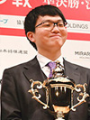
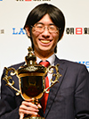
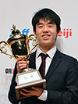

朝日杯将棋オープン戦について
棋戦概要
全棋士、アマチュア10人、女流棋士６人によるトーナメントです。
１次予選から本戦まで全てがトーナメントで、決勝も１番勝負となります。優勝者が獲得する賞金は750万円です。
方式、持ち時間
トーナメント制
1次予選、2次予選、本戦（16名）
持ち時間 各40分
アマ・女流棋士の参加条件
朝日アマ名人、朝日アマ名人戦全国大会ベスト8進出者、学生名人の計10名。女流棋士はタイトル保持者ら6名を選抜。
棋譜掲載
当サイトまたは、朝日新聞デジタルにて棋譜掲載
第18回朝日杯将棋オープントーナメント
 2025年2月11日に有楽町朝日ホールで準決勝、決勝戦が行なわれ、124手で近藤誠也七段が井田明宏五段を下し、優勝を決めました。
2025年2月11日に有楽町朝日ホールで準決勝、決勝戦が行なわれ、124手で近藤誠也七段が井田明宏五段を下し、優勝を決めました。
第17回朝日杯将棋オープントーナメント

2024年2月10日に有楽町朝日ホールで準決勝、決勝戦が行なわれ、129手で永瀬拓矢九段が藤井聡太竜王・名人を下し、優勝を決めました。第16回朝日杯将棋オープントーナメント
2023年2月23日に有楽町朝日ホールで準決勝、決勝戦が行なわれ、103手で藤井聡太竜王が渡辺 明九段を下し、優勝を決めました。
第15回朝日杯将棋オープントーナメント
2022年2月23日に有楽町マリオン朝日ホールで準決勝、決勝戦が行なわれ、95手で菅井竜也八段が稲葉 陽八段を下し、優勝を決めました。
第14回朝日杯将棋オープントーナメント
2021年2月11日に有楽町マリオン朝日ホールで準決勝、決勝戦が行なわれ、101手で藤井聡太二冠が三浦弘行九段を下し、優勝を決めました。
第13回朝日杯将棋オープントーナメント

2020年2月11日に有楽町マリオン朝日ホールで準決勝、決勝戦が行なわれ、105手で千田翔太七段が永瀬拓矢二冠を下し、優勝を決めました。第12回朝日杯将棋オープントーナメント
2019年2月16日に有楽町マリオン朝日ホールで準決勝、決勝戦が行なわれ、128手で藤井聡太七段が渡辺明棋王を下し、優勝を決めました。
第11回朝日杯将棋オープントーナメント

2018年2月17日に有楽町マリオン朝日ホールで準決勝、決勝戦が行なわれ、117手で藤井聡太五段が広瀬章人八段を下し、優勝を決めました。第10回朝日杯将棋オープントーナメント
2017年2月11日に有楽町マリオン朝日ホールで準決勝、決勝戦が行なわれ、148手で八代弥五段が村山慈明七段を下し、優勝を決めました。
第9回朝日杯将棋オープントーナメント
2016年2月13日に有楽町マリオン朝日ホールで準決勝、決勝戦が行なわれ、120手で羽生善治名人が森内俊之九段を下し、優勝を決めました。
第8回朝日杯将棋オープントーナメント
2015年2月14日に有楽町マリオン朝日ホールで準決勝、決勝戦が行なわれ、109手で羽生善治名人が渡辺明二冠を下し、優勝を決めました。
第7回朝日杯将棋オープントーナメント
2014年2月8日に有楽町マリオン朝日ホールで準決勝、決勝戦が行なわれ、130手で羽生善治三冠が渡辺明二冠を下し、優勝を決めました。
第6回朝日杯将棋オープントーナメント
2013年2月9日に有楽町マリオン朝日ホールで準決勝、決勝戦が行なわれ、111手で渡辺明竜王が菅井竜也五段を下し、優勝を決めました。
第5回朝日杯将棋オープントーナメント
2012年2月11日に有楽町マリオン朝日ホールで準決勝、決勝戦が行なわれ、78手で羽生善治二冠が広瀬章人七段を下し、2回目の優勝を決めました。
第4回朝日杯将棋オープントーナメント
2011年2月12日に有楽町マリオン朝日ホールで準決勝、決勝戦が行なわれ、99手で木村一基八段が羽生善治名人を下し、優勝を決めました。
第3回朝日杯将棋オープントーナメント
2010年2月13日に有楽町マリオン朝日ホールで準決勝戦、決勝戦が行われ、130手で羽生善治名人が久保利明棋王を下し、優勝を決めました。
第2回朝日杯将棋オープントーナメント
2009年2月14日に有楽町マリオン朝日ホールで準決勝戦、決勝戦が行われ、75手で阿久津主税六段（当時）が久保利明八段を下し、優勝を決めました。
第1回朝日杯将棋オープントーナメント
2008年2月9日に有楽町マリオン朝日ホールで準決勝戦、決勝戦が行われ、95手で行方尚史八段が丸山忠久九段に下し、初代覇者となりました。